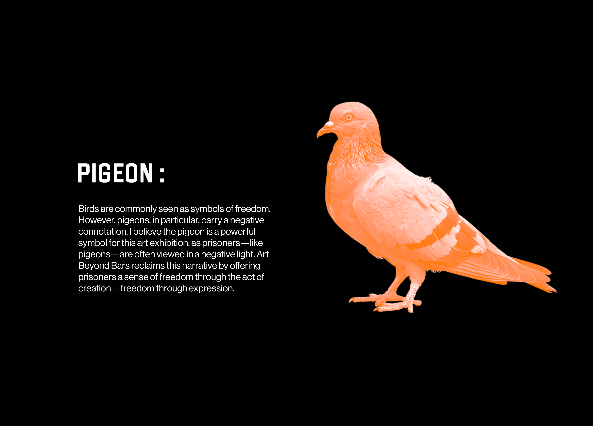
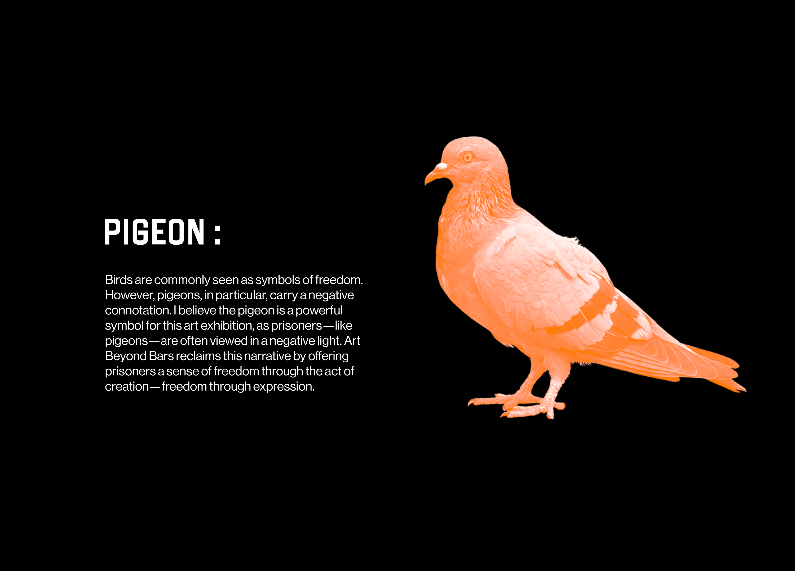
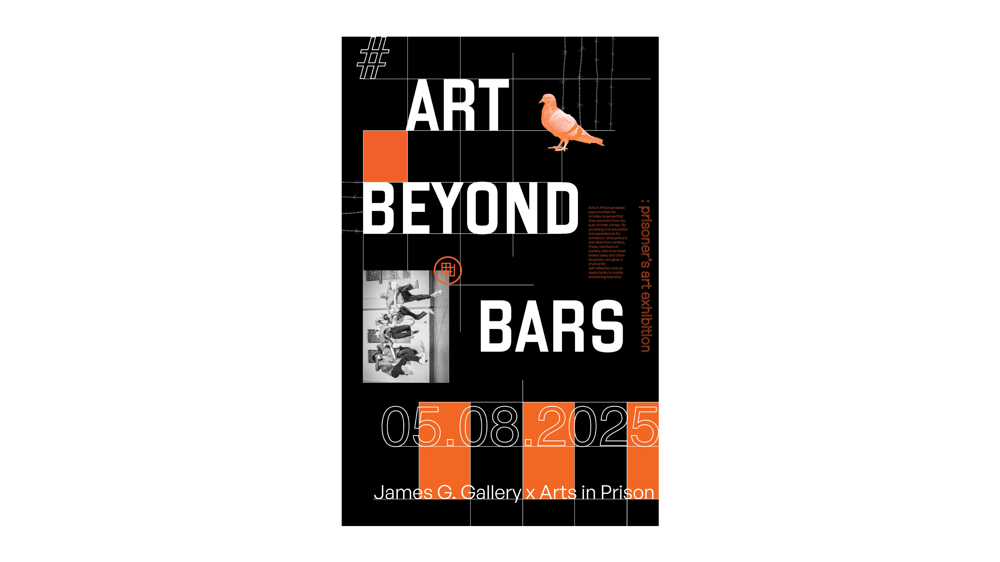
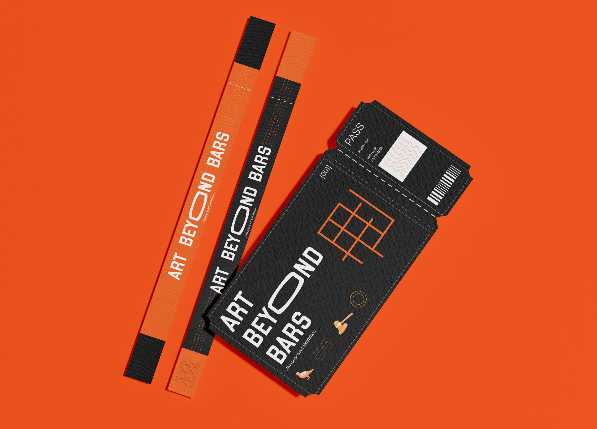
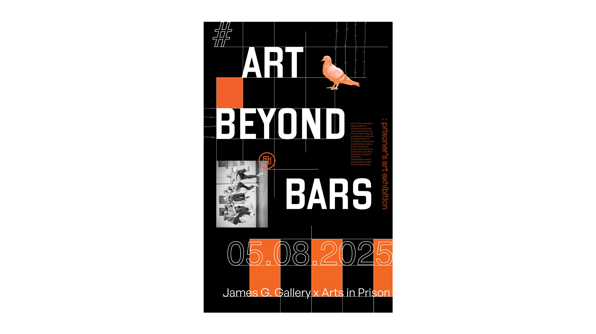
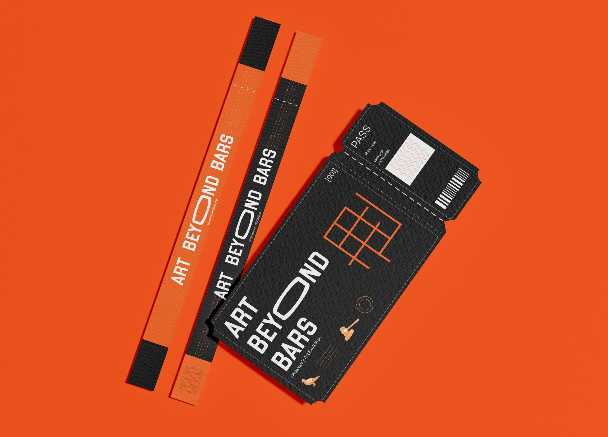

Art Beyond Bars
Art beyond bars is a prisoner’s art exhibition that showcases creative work made by prisoners. This project focuses on building a visual identity for a non-profit organization that advocates for art education and creative expression within the prison system. The concept that drives the design is the idea that through art, prisoners can experience a sense of freedom and reclaim their voice in a place where their freedom is stripped away.
 

 


